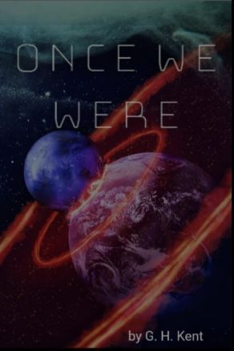

Once We Were
The end of the world had come and gone, and none bothered to tell them.
Centuries after a meteor impact deploys a strange material into Earth's atmosphere, slowly reducing the lifespan of all living organisms, a group of people leave their sheltered underwater city with a cure.
But we needed no cure, as we mastered the mysterious dust, using it to power our daily lives, accepting that all life will slowly die in exchange of such power.
To cure this dying Earth, they'd have to become an enemy of it.
Once We Were is a science fiction tale focused on studying the nature of humanity and the concept of its purpose when put through the lens of people who never lived in it
Philosophical discussions aside, the story also delves deeper into he nature of technology, biology, and exploration of space while trapping the reader within suspenseful action sequences,
You can check the prologue and the first two chapters via the Samples page or read the first 10 Chapters available on the Royal Road website.
The full book is scheduled to be released in December 2025.